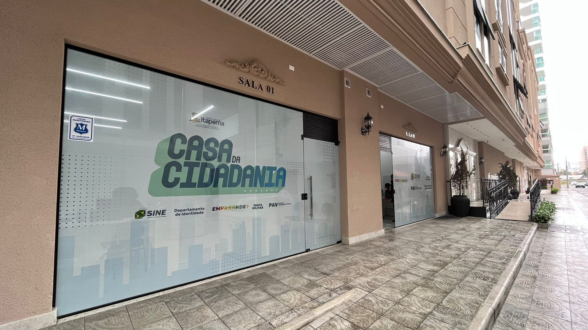

A roda-gigante de Itapema seleciona para 69 vagas neste sábado, e as nove vagas publicadas pedem experiência e pagam de R$ 2.300 a R$ 4.000
A seletiva de 3 de outubro, cuja função continua na lista do Sine desta terça.
A Prefeitura de Itapema divulgou nesta terça a lista de vagas do Sine da cidade: 45 oportunidades em 39 funções diferentes. Fomos atrás de todas as listas que ela publicou desde fevereiro de 2025 e abrimos uma por uma. São treze, e juntas elas formam uma série que ninguém tinha montado. As cinco de 2026 ficaram entre 23 e 45 vagas. As oito de 2025 ficaram entre 136 e 233. A desta terça é a maior do ano e vale um terço da menor do ano passado. Quem quiser se candidatar vai à Casa da Cidadania, na Meia Praia, das 8h às 17h, ou se inscreve pelo aplicativo da Carteira de Trabalho Digital.
Em 30 segundos · Modo de Leitura, formato original Santa Informa
A Prefeitura divulgou a lista do Sine de Itapema.
São 45 oportunidades de emprego.
Elas estão em 39 funções diferentes.
A lista nomeia as 39, de ajudante de motorista a zelador.
Quase toda função tem uma vaga só.
A conta dá 1,15 vaga por função.
Fomos atrás das listas antigas da Prefeitura.
Abrimos treze, uma por uma.
Elas começam em fevereiro de 2025.
Em 2025 saíram oito listas com número.
Foram 233 vagas em fevereiro.
186 em março e 215 em abril.
138 em junho e 179 em julho.
175 e 154 em agosto.
E 136 em setembro, a menor delas.
A média das oito é 177 vagas.
Em 2026 saíram cinco listas.
41 em janeiro.
40 e 39 em maio.
23 em julho, a menor de todas.
E as 45 desta terça.
A média de 2026 é 37,6 vagas.
Isso é 78,8% abaixo de 2025, conta nossa.
A de hoje é a maior do ano.
E vale um terço da menor de 2025.
A lista mais perto no calendário é a de setembro.
Em 26 de setembro de 2025 eram 136.
De lá para cá passaram 382 dias.
A diferença é de 91 vagas a menos.
Em percentual, 66,9%, conta nossa.
Cinco funções de hoje são de hotel e cozinha.
Camareira, chefe de cozinha e cozinheiro geral.
Garçom e governanta de hotelaria.
Uma função chama atenção: operador de roda-gigante.
O Sine fez seletiva para a roda-gigante em 3 de outubro.
Eram 69 vagas na It! Wheel.
Dez dias depois a função segue na lista.
Para se candidatar, dá para fazer pela internet.
É o portal servicos.mte.gov.br.
Ou o aplicativo da Carteira de Trabalho Digital.
Presencial é na Casa da Cidadania.
Rua 216, nº 155, na Meia Praia.
O horário é das 8h às 17h.
Leve CPF, RG e Carteira de Trabalho.
A vaga pode ser preenchida a qualquer hora.
EconomiaPublicada em Redação Santa Informa

A Prefeitura de Itapema divulgou nesta terça-feira, 13 de outubro, a lista de vagas do Sine da cidade: são 45 oportunidades espalhadas por 39 funções diferentes. É o maior número das cinco listas que a Prefeitura publicou em 2026. E é um terço da menor lista de 2025, que trazia 136 vagas.
Essa comparação não estava pronta em lugar nenhum, então fomos montar. Procuramos no site da Prefeitura todas as listas de vagas do Sine e abrimos uma por uma, da primeira à última. São treze, a mais antiga de fevereiro de 2025. Em 2025 saíram oito com o número escrito no texto: 233 em fevereiro, 186 em março, 215 em abril, 138 em junho, 179 em julho, 175 e 154 em agosto e 136 em setembro. A média das oito dá 177 vagas. Em 2026 saíram cinco: 41 em janeiro, 40 e 39 em maio, 23 em julho e as 45 desta terça. A média cai para 37,6, que é 78,8% abaixo do ano passado, conta nossa.
A lista de 2025 mais perto desta época do ano é a de 26 de setembro, com 136 vagas. Entre aquele dia e esta terça passaram 382 dias, e a diferença é de 91 vagas a menos, ou 66,9%, conta nossa. Mudou também o tamanho de cada função. Em setembro do ano passado eram 136 vagas em 64 funções, o que dá 2,12 por função. Agora são 45 em 39, ou 1,15 por função. Na prática, quase toda função da lista de hoje tem uma vaga só.
A nota nomeia as 39 funções, de ajudante de motorista a zelador. Cinco delas são de hotel e cozinha, o setor que a cidade enche no verão: camareira de hotel, chefe de cozinha, cozinheiro geral, garçom e governanta de hotelaria. Uma outra chama atenção pelo calendário, operador de roda-gigante. Em 3 de outubro, dez dias atrás, o próprio Sine realizou uma seletiva para 69 vagas na It! Wheel, a roda-gigante da orla, e nós abrimos aquelas vagas uma a uma na época. A função continua na lista desta terça.
Para se candidatar dá para fazer tudo pela internet, no portal servicos.mte.gov.br ou pelo aplicativo da Carteira de Trabalho Digital. O atendimento presencial é na Casa da Cidadania, na Rua 216, nº 155, na Meia Praia, das 8h às 17h, levando CPF, RG e a Carteira de Trabalho, física ou digital. Os requisitos mudam conforme a função, e algumas pedem escolaridade específica, experiência comprovada, CNH ou registro profissional, como o CRECI/SC para corretor de imóveis. A própria Prefeitura avisa que as vagas seguem o critério dos empregadores e podem mudar ou ser preenchidas a qualquer momento.
O resumo de 30 segundos está no topo e a versão completa é o texto acima. Aqui ficam as três leituras da casa sobre o mesmo assunto.
Clara, a otimista
Quarenta e cinco vagas é o maior número do ano, e isso depois de uma lista de 23 em julho. A linha está subindo, não caindo, e sobe justo agora, quando a cidade começa a se preparar para a temporada. Tem camareira, tem cozinheiro, tem garçom, tem governanta de hotelaria. É o verão batendo na porta do balcão do Sine.
E olha uma coisa boa que passa despercebida: a nota diz que as vagas contemplam candidatos com ou sem experiência. Quem está começando tem onde se inscrever hoje, de graça, pelo celular, sem sair de casa. Quem prefere olho no olho vai à Casa da Cidadania, na Meia Praia, das 8h às 17h. Para uma cidade de pouco mais de 88 mil moradores, ter um posto aberto todo dia útil com a lista publicada no site já é mais do que muita cidade grande oferece.
Seu Prudêncio, o criterioso
Merece atenção a natureza do número. A lista do Sine é a posição de um dia, não a série de emprego do município. Vaga entra e sai do balcão, e o Novo CAGED, que é a estatística oficial, mede outra coisa. Então a leitura honesta aqui é esta: estamos comparando as listas que a própria Prefeitura publicou, nada além disso.
Dito isso, a diferença é grande demais para ser só ruído. Oito listas em 2025 ficaram entre 136 e 233 vagas. Cinco listas em 2026 ficaram entre 23 e 45. Nenhuma lista deste ano chegou perto da menor do ano passado, e isso vale acompanhar com cuidado, porque estamos entrando no período em que o comércio e a hotelaria costumam contratar. Também vale notar que saíram menos listas neste ano, oito contra cinco, e série com buraco pede cautela na conclusão.
Há aqui algo que funciona bem e precisa ser reconhecido. A Prefeitura publica a lista nomeando função por função, todas as 39, e deixa as notas antigas no ar com a data. Foi exatamente isso que permitiu montar a série de treze listas em uma tarde, sem pedir nada a ninguém. Uma sugestão útil seria a nota trazer, junto com o total, quantas pessoas o posto encaminhou no período. O dado o Sine tem, e ele responderia de uma vez se a lista encolheu por falta de vaga ou por excesso de contratação.
Caco, o sarcástico
Quarenta e cinco vagas em trinta e nove funções. Faça a conta comigo: dá uma vaga e pouco por função. É aquele tipo de lista em que o cargo de governanta de hotelaria existe no singular, e se você conseguir, parabéns, você é a governanta de hotelaria de Itapema.
Reclamação registrada: a lista de 29 de maio diz 59 no título e 39 no texto. Vinte vagas que existem ou não existem conforme a parte da página que você lê. Fui atrás das duas e fiquei com a do texto, que é onde normalmente mora a notícia. Continua lá, as duas, convivendo em paz desde maio.
Mas tá bom porque pelo menos está tudo publicado. Treze listas no ar, com data, com as funções escritas uma a uma, de ajudante de motorista a zelador. Tem prefeitura que trata vaga de emprego como segredo de Estado e solta no grupo de WhatsApp. Aqui dá para abrir o site e contar. Chato é contar. Mas dá.
Fontes: as 45 oportunidades em 39 funções, a lista completa das funções, a exigência de CNH e de CRECI/SC conforme a vaga, a inscrição pelo portal servicos.mte.gov.br e pelo aplicativo da Carteira de Trabalho Digital, o atendimento presencial na Casa da Cidadania, na Rua 216, nº 155, na Meia Praia, das 8h às 17h, com CPF, RG e Carteira de Trabalho, e o aviso de que as vagas podem ser alteradas ou preenchidas estão na nota Sine Itapema disponibiliza 45 oportunidades de emprego em 39 funções diferentes, publicada pela Prefeitura de Itapema em 13 de outubro de 2026, de onde também veio a foto de topo. A série foi montada por nós abrindo uma por uma as listas anteriores no site da Prefeitura: 233 vagas em 10 de fevereiro de 2025, 186 em 17 de março de 2025, 215 em 7 de abril de 2025, 138 em 17 de junho de 2025, 179 em 11 de julho de 2025, 175 em 15 de agosto de 2025, 154 em 29 de agosto de 2025, 136 em 26 de setembro de 2025, 41 em 12 de janeiro de 2026, 40 em 25 de maio de 2026, a lista de 29 de maio de 2026, que traz 59 no título e 39 no texto, e 23 em 3 de julho de 2026, todas consultadas em 13 de outubro de 2026. A seletiva de 3 de outubro para 69 vagas na It! Wheel está na nota Sine de Itapema realiza seleção para 69 vagas na roda-gigante neste sábado (3), de 1º de outubro de 2026, e nós abrimos aquelas vagas em A roda-gigante de Itapema seleciona para 69 vagas neste sábado. As médias de 177 e 37,6 vagas, os 78,8%, o um terço, as 91 vagas de diferença, os 66,9%, os 382 dias, os 102 dias e as contas de vaga por função são nossas, feitas sobre esses documentos. A estatística oficial de emprego por município é o Novo CAGED, do Ministério do Trabalho e Emprego, que mede coisa diferente da lista de um posto e não foi usado nesta comparação. A população de 88.842 moradores é a estimativa do IBGE para 2026, na tabela 6579.
A seletiva de 3 de outubro, cuja função continua na lista do Sine desta terça.
 Itapema · Economia
Itapema · EconomiaOutra frente da mesma Secretaria de Desenvolvimento Econômico e Habitação.
 Itapema · Poder Público
Itapema · Poder PúblicoO outro serviço que a Prefeitura leva à Meia Praia, no mesmo bairro da Casa da Cidadania.